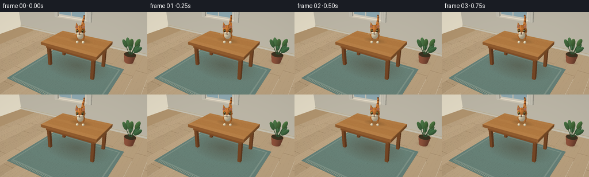
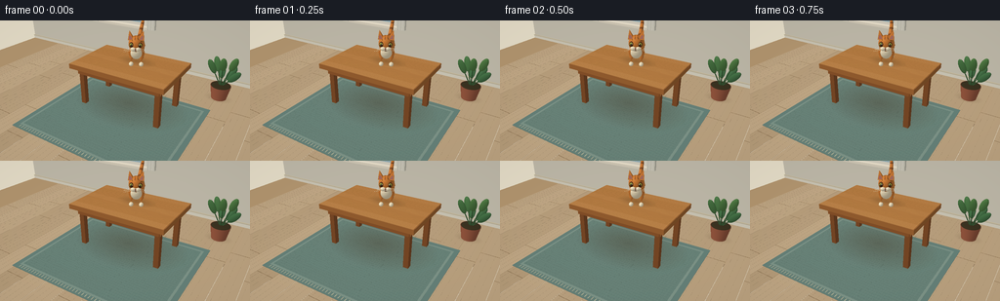
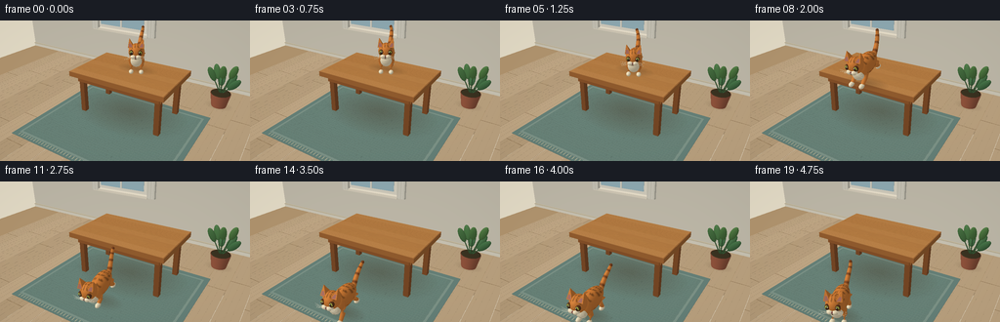
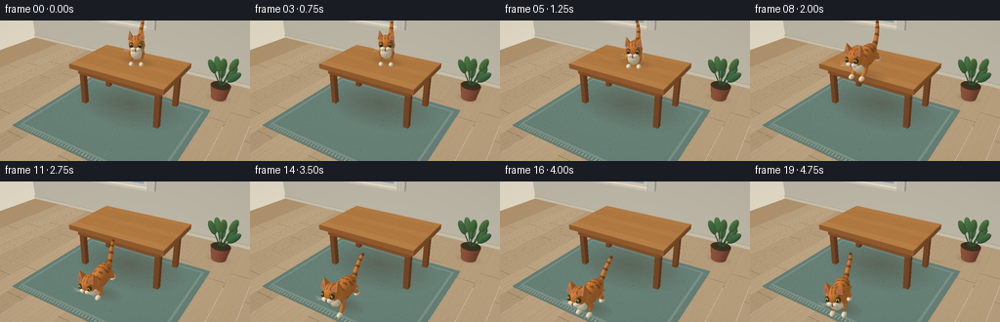
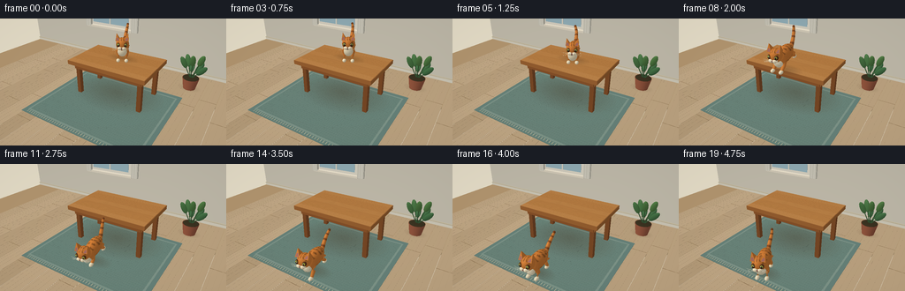

CODING AGENTS AS PIXEL WORLD MODELS
traex/GPT-6.1-Sol · dynamic_spatial_relationship_0012
点击播放 · 原生 RGB 像素
逐轮保存的候选
回放视频、检查图与代码变化。
每份候选均可单独播放。实际图片检查记录在下方工具轨迹中。
候选 01播放与检查图
点击播放 · 原生 RGB 像素


展开代码变化
--- 上一保存版本
+++ 本次保存版本
@@ -0,0 +1,279 @@
+from pathlib import Path
+import json, math
+import numpy as np
+from PIL import Image
+import artifact_io
+
+ROOT=Path(__file__).resolve().parent
+SPEC=json.loads((ROOT/'task_spec.json').read_text())
+W,H=SPEC['width'],SPEC['height']
+SS=3; RW=W*SS; RH=H*SS
+cam=np.array([4.6,-7.8,5.6]); target=np.array([0.,-.35,1.05])
+forward=(target-cam); forward/=np.linalg.norm(forward)
+right=np.cross(forward,[0,0,1]); right/=np.linalg.norm(right)
+up=np.cross(right,forward)
+FOCAL=290*SS
+LIGHT=np.array([-0.45,-0.55,.85]); LIGHT/=np.linalg.norm(LIGHT)
+
+class Render:
+ def __init__(self):
+ self.im=np.zeros((RH,RW,3),dtype=np.float32); self.im[:]=[226,218,197]
+ self.depth=np.full((RH,RW),1e6,dtype=np.float32)
+ def mesh(self,v,faces,colors,normals=None,alpha=1):
+ v=np.asarray(v,float); faces=np.asarray(faces,int)
+ q=v-cam; z=q@forward
+ p=np.stack([RW/2+FOCAL*(q@right)/z, RH/2-FOCAL*(q@up)/z],axis=1)
+ colors=np.asarray(colors,float)
+ if colors.ndim==1: colors=np.tile(colors,(len(v),1))
+ if normals is not None:
+ normals=np.asarray(normals); light=np.maximum(0,normals@LIGHT)
+ # Warm diffuse illumination, cooler soft fill, subtle highlight.
+ shade=.64+.36*light
+ colors=colors*shade[:,None]
+ halfway=LIGHT-forward; halfway/=np.linalg.norm(halfway)
+ specular=np.maximum(0,normals@halfway)**25
+ colors+=specular[:,None]*12
+ for f in faces:
+ if np.min(z[f])<=.01: continue
+ pp=p[f]; x0=max(0,int(np.floor(pp[:,0].min()))); x1=min(RW-1,int(np.ceil(pp[:,0].max())))
+ y0=max(0,int(np.floor(pp[:,1].min()))); y1=min(RH-1,int(np.ceil(pp[:,1].max())))
+ if x1<x0 or y1<y0: continue
+ a,b,c=pp
+ den=(b[1]-c[1])*(a[0]-c[0])+(c[0]-b[0])*(a[1]-c[1])
+ if abs(den)<1e-7: continue
+ xx,yy=np.meshgrid(np.arange(x0,x1+1)+.5,np.arange(y0,y1+1)+.5)
+ u=((b[1]-c[1])*(xx-c[0])+(c[0]-b[0])*(yy-c[1]))/den
+ w=((c[1]-a[1])*(xx-c[0])+(a[0]-c[0])*(yy-c[1]))/den
+ t=1-u-w
+ dep=1/(u/z[f[0]]+w/z[f[1]]+t/z[f[2]])
+ mask=(u>=-1e-6)&(w>=-1e-6)&(t>=-1e-6)&(dep<self.depth[y0:y1+1,x0:x1+1])
+ if not mask.any(): continue
+ cc=(u[...,None]*colors[f[0]]/z[f[0]]+w[...,None]*colors[f[1]]/z[f[1]]+t[...,None]*colors[f[2]]/z[f[2]])*dep[...,None]
+ dest=self.im[y0:y1+1,x0:x1+1]
+ dest[mask]=dest[mask]*(1-alpha)+cc[mask]*alpha
+ if alpha>=.99: self.depth[y0:y1+1,x0:x1+1][mask]=dep[mask]
+ def box(self,lo,hi,col):
+ lo=np.array(lo); hi=np.array(hi)
+ for axis in range(3):
+ others=[a for a in range(3) if a!=axis]
+ for side in (0,1):
+ v=[]
+ for a,b in ((0,0),(1,0),(1,1),(0,1)):
+ pt=lo.copy(); pt[axis]=hi[axis] if side else lo[axis]
+ pt[others[0]]=hi[others[0]] if a else lo[others[0]]
+ pt[others[1]]=hi[others[1]] if b else lo[others[1]]; v.append(pt)
+ n=np.zeros((4,3)); n[:,axis]=1 if side else -1
+ self.mesh(v,[[0,1,2],[0,2,3]],col,n)
+ def sphere(self,center,scale,col,rot=None,nu=20,nv=12,texture=None):
+ v=[]; n=[]; colors=[]
+ center=np.array(center); scale=np.array(scale); rot=np.eye(3) if rot is None else rot
+ for j in range(nv+1):
+ lat=math.pi*j/nv
+ for i in range(nu):
+ a=2*math.pi*i/nu
+ d=np.array([math.sin(lat)*math.cos(a),math.sin(lat)*math.sin(a),math.cos(lat)])
+ v.append(center+rot@(d*scale)); nn=rot@(d/scale); n.append(nn/np.linalg.norm(nn))
+ colors.append(col if texture is None else texture(d, np.array(col)))
+ f=[]
+ for j in range(nv):
+ for i in range(nu):
+ a=j*nu+i;b=j*nu+(i+1)%nu;c=(j+1)*nu+(i+1)%nu;d=(j+1)*nu+i
+ f.extend([[a,b,c],[a,c,d]])
+ self.mesh(v,f,colors,n)
+ def tube(self,points,radii,col,texture=None,sides=10):
+ points=np.array(points); v=[]; n=[]; colors=[]
+ for i,p in enumerate(points):
+ d=points[min(i+1,len(points)-1)]-points[max(i-1,0)]; d/=np.linalg.norm(d)
+ e=np.cross(d,[0,0,1])
+ if np.linalg.norm(e)<.01:e=np.cross(d,[0,1,0])
+ e/=np.linalg.norm(e); g=np.cross(d,e)
+ for k in range(sides):
+ a=2*math.pi*k/sides; normal=e*math.cos(a)+g*math.sin(a)
+ v.append(p+normal*radii[i]); n.append(normal)
+ colors.append(col if texture is None else texture(i,k))
+ f=[]
+ for i in range(len(points)-1):
+ for j in range(sides):
+ a=i*sides+j;b=i*sides+(j+1)%sides;c=(i+1)*sides+(j+1)%sides;d=(i+1)*sides+j
+ f.extend([[a,b,c],[a,c,d]])
+ self.mesh(v,f,colors,n)
+ def shadow(self,center,scale,strength=.2):
+ # Nested elliptical rings with smoothly fading opacity.
+ for j in range(15,0,-1):
+ rad=j/15
+ v=[np.array(center)]
+ for k in range(41):
+ a=k*2*math.pi/40
+ v.append(np.array(center)+np.array([scale[0]*rad*math.cos(a),scale[1]*rad*math.sin(a),0]))
+ f=[[0,k+1,k+2] for k in range(40)]
+ self.mesh(v,f,[67,48,29],alpha=strength/15)
+
+ORANGE=np.array([219.,131.,57.]); CREAM=np.array([246.,231.,195.]); DARK=np.array([126.,68.,32.])
+def scene(r):
+ # Sunlit room: pale plaster walls and wide natural oak flooring.
+ r.box([-9,-9,-.12],[9,5,0],[192,161,120])
+ rng=np.random.default_rng(7)
+ for i in range(19):
+ x=-7+i*.74
+ co=np.array([202,175,138])+rng.uniform(-7,7)
+ r.box([x,-8,.001],[x+.73,4.7,.005],co)
+ for j in range(3):
+ y=-7+j*3.5+(i%3)*.7
+ r.box([x,y,.005],[x+.73,y+.012,.008],[150,121,85])
+ for k in range(3):
+ xg=x+.12+k*.19
+ r.box([xg,-7,.006],[xg+.005,4.6,.008],co-7)
+ r.box([-9,3.7,0],[9,3.84,6],[229,222,203])
+ r.box([-9,3.64,0],[9,3.73,.17],[241,234,214])
+ r.box([-9,3.61,.17],[9,3.76,.2],[212,200,171])
+ # Window frame, quiet sky blue panes, broad sill.
+ r.box([-3.95,3.51,1.9],[-1.2,3.65,4.3],[250,243,225])
+ r.box([-3.78,3.49,2.07],[-1.37,3.51,4.13],[172,205,215])
+ r.box([-3.76,3.47,3.05],[-1.37,3.49,3.13],[243,240,223])
+ r.box([-2.62,3.46,2.07],[-2.53,3.5,4.13],[243,240,224])
+ r.box([-4.08,3.26,1.82],[-1.07,3.76,1.93],[249,239,217])
+ # Light curtains on either side.
+ for x in (-4.16,-1.08):
+ for j in range(5):
+ r.box([x+j*.075,3.25,1.86],[x+j*.075+.085,3.39,4.45],[229+j%2*10,225+j%2*9,208+j%2*10])
+ # A woven muted teal rug anchors the foreground.
+ r.box([-2.65,-3.22,.008],[2.7,1.15,.021],[110,139,130])
+ r.box([-2.48,-3.03,.022],[2.53,.95,.026],[135,159,146])
+ r.box([-2.4,-2.95,.027],[2.45,.87,.029],[113,141,130])
+ for i in range(55):
+ x=-2.34+i*.086
+ r.box([x,-2.91,.03],[x+.009,.83,.031],[122,148,135])
+ for i in range(36):
+ y=-2.9+i*.105
+ r.box([-2.35,y,.032],[2.4,y+.007,.033],[107,135,124])
+ for i in range(42):
+ x=-2.4+i*.115
+ r.box([x,-3.16,.022],[x+.027,-3.04,.026],[185,189,161])
+ # Table cast shadow and four wooden legs.
+ r.shadow([0,.0,.04],[2.2,1.5],.38)
+ for x in (-1.49,1.49):
+ for y in (-.78,.78):
+ r.box([x-.092,y-.092,.04],[x+.092,y+.092,1.52],[140,84,44])
+ r.box([x-.08,y-.08,.05],[x+.08,y+.08,.15],[122,71,37])
+ r.box([-1.58,-.95,1.27],[1.58,-.82,1.53],[156,94,47])
+ r.box([-1.58,.82,1.27],[1.58,.95,1.53],[150,90,45])
+ r.box([-1.62,-.9,1.27],[-1.49,.9,1.53],[153,91,45])
+ r.box([1.49,-.9,1.27],[1.62,.9,1.53],[164,101,50])
+ r.box([-1.8,-1.13,1.49],[1.8,1.13,1.66],[174,110,56])
+ for k in range(7):
+ y=-1.12+k*.32
+ col=np.array([197,136,74])+rng.uniform(-4,4)
+ r.box([-1.78,y,1.66],[1.78,y+.316,1.673],col)
+ for j in range(4):
+ yy=y+.05+j*.069
+ r.box([-1.72,yy,1.674],[1.72,yy+.008,1.675],col-[10,8,6])
+ # Far right houseplant, out of the action area.
+ r.shadow([2.7,2.2,.01],[.55,.38],.2)
+ r.tube([[2.7,2.2,.02],[2.7,2.2,.56]],[.28,.38],[162,94,68],sides=24)
+ r.sphere([2.7,2.2,.56],[.36,.36,.035],[62,54,35])
+ for i in range(7):
+ a=i*2.4
+ end=np.array([2.7+.42*math.cos(a),2.2+.39*math.sin(a),1.0+(i%3)*.28])
+ r.tube([[2.7,2.2,.5],end],[.023,.015],[62,98,60],sides=6)
+ d=end-np.array([2.7,2.2,.5]); z=d/np.linalg.norm(d); xx=np.cross([0,1,0],z);xx/=np.linalg.norm(xx); yy=np.cross(z,xx)
+ rot=np.column_stack([xx,yy,z])
+ r.sphere(end,[.13,.075,.3],[70+i%3*8,116+i%3*8,72],rot,nu=12,nv=8)
+
+
+def cat(r,frame):
+ # Held establishing shot, run to edge, single leap, then run to the front.
+ ys=[.25,.25,.25,.24,.20,.08,-.20,-.61,-1.03,-1.37,-1.66,-1.93,-2.15,-2.36,-2.53,-2.64,-2.68,-2.68,-2.68,-2.68]
+ heights=[1.68]*8+[1.80,1.48,.88,.23,.035,.035,.035,.035,.035,.035,.035,.035]
+ x=.12 +(.14 if frame>=12 else 0)
+ base=np.array([x,ys[frame],heights[frame]])
+ yaw=-1.12 if frame<6 else -1.46
+ if frame>=16:yaw=-1.46+(frame-16)/3*.32
+ pitch=0
+ if frame==5:pitch=-.05
+ if frame in (8,9,10):pitch=-.16 if frame==8 else -.36
+ if frame==11:pitch=-.2
+ cy,sy=math.cos(yaw),math.sin(yaw); cp,sp=math.cos(pitch),math.sin(pitch)
+ rot=np.array([[cy*cp,-sy,-cy*sp],[sy*cp,cy,-sy*sp],[sp,0,cp]])
+ def tr(p):return base+rot@np.asarray(p)
+ def sph(p,s,c,nu=20,nv=12,texture=None):r.sphere(tr(p),s,c,rot,nu,nv,texture)
+ def tube(p,rad,c,texture=None,sides=10):r.tube([tr(a) for a in p],rad,c,texture,sides)
+ run=6<=frame<=14
+ phase=(frame-6)*2.65
+ crouch=.09 if frame==5 else (.10 if frame==11 else 0)
+ bob=.025*math.sin(frame*.7) if not run else .04*math.cos(phase*2)
+ zoff=bob-crouch
+ if heights[frame]>1.5 and ys[frame]>-1.15:r.shadow([base[0],base[1],1.682],[.76,.43],.33)
+ else:r.shadow([base[0],base[1],.04],[.72+(heights[frame])*.16,.41],.35/(1+heights[frame]))
+ # Alternating diagonal paws, articulated upper and lower leg sections.
+ for side in (-1,1):
+ for fore in (False,True):
+ hx=.36 if fore else -.38
+ yy=side*.17
+ ph=phase+(0 if fore else math.pi)+(0 if side==1 else math.pi)
+ stride=.20*math.sin(ph) if run else 0
+ lift=.11*max(0,math.cos(ph)) if run else 0
+ if frame in (8,9,10):
+ stride=.25 if fore else -.18;lift=.12 if fore else .14
+ hip=np.array([hx,yy,.47+zoff]); foot=np.array([hx+stride,yy,.075+lift])
+ knee=(hip+foot)/2+np.array([-.085 if fore else .09,0,-.005])
+ tube([hip,knee,foot],[.105,.076,.057],ORANGE)
+ sph(foot+[.045,0,-.005],[.12,.078,.068],CREAM,nu=14,nv=8)
+ def stripes(d,c):
+ stripe=math.cos(d[0]*20+d[2]*2.0+abs(d[1])*1.7)
+ if stripe>.73 and d[2]>-.52:return c*.64
+ return c*(.97+.035*d[2])
+ sph([-.05,0,.56+zoff],[.57,.255,.31],ORANGE,nu=36,nv=20,texture=stripes)
+ sph([.37,0,.57+zoff],[.22,.235,.275],ORANGE)
+ sph([.48,0,.50+zoff],[.15,.193,.21],CREAM)
+ # Sweeping upright striped tail, continuing naturally from the rump.
+ points=[]
+ for i in range(15):
+ u=i/14
+ points.append([-.51-.55*math.sin(u*1.35),.05+math.sin(frame*.35+u*2)*.09*u,.62+zoff+.72*u-.12*u*u])
+ tube(points,[.087-.038*i/14 for i in range(15)],ORANGE,lambda i,k:DARK if i%4==2 else ORANGE,sides=12)
+ sph(points[-1],[.052,.052,.053],DARK,nu=12,nv=8)
+ # Broad cheeked head and unmistakable pointed cat ears.
+ headz=.86+zoff
+ def headtex(d,c):
+ if d[2]>.45 and abs(d[1])<.7 and math.cos(d[1]*17+d[2]*3)>.7:return c*.64
+ return c
+ sph([.59,0,headz],[.266,.246,.257],ORANGE,nu=28,nv=18,texture=headtex)
+ for side in (-1,1):
+ y=side*.165
+ verts=np.array([[.44,y-.095,headz+.16],[.75,y-.09,headz+.16],[.74,y+.09,headz+.16],[.46,y+.08,headz+.16],[.58,side*.223,headz+.425]])
+ faces=[[0,1,4],[1,2,4],[2,3,4],[3,0,4]]
+ ns=[]
+ # Individual faces retain crisp ear geometry.
+ for f in faces:
+ vv=verts[f];n=np.cross(vv[1]-vv[0],vv[2]-vv[0]);n/=np.linalg.norm(n)
+ r.mesh([tr(q) for q in vv],[[0,1,2]],ORANGE,np.tile(rot@n,(3,1)))
+ inner=np.array([[.754,y-.062,headz+.185],[.744,y+.06,headz+.19],[.602,side*.219,headz+.36]])
+ r.mesh([tr(q) for q in inner],[[0,1,2]],[204,132,116],np.tile(rot@np.array([1,0,.15]),(3,1)))
+ for side in (-1,1):
+ sph([.789,side*.133,headz+.025],[.076,.077,.09],[95,57,30],nu=16,nv=10)
+ sph([.824,side*.135,headz+.029],[.038,.061,.069],[179,189,78],nu=16,nv=10)
+ sph([.854,side*.134,headz+.03],[.012,.014,.055],[31,38,26],nu=12,nv=8)
+ sph([.864,side*.117,headz+.055],[.009,.014,.017],[255,255,232],nu=10,nv=6)
+ sph([.797,side*.071,headz-.105],[.11,.10,.077],CREAM,nu=18,nv=10)
+ sph([.845,0,headz-.095],[.047,.048,.032],[130,69,65],nu=14,nv=8)
+ tube([[.867,0,headz-.12],[.862,0,headz-.159]],[.009,.007],[80,51,37],sides=6)
+ for side in (-1,1):
+ tube([[.862,0,headz-.159],[.84,side*.058,headz-.167]],[.007,.004],[80,51,37],sides=6)
+ for k in range(3):
+ tube([[.85,side*.069,headz-.12+k*.019],[.87,side*.235,headz-.15+k*.04],[.85,side*.37,headz-.19+k*.065]],[.006,.004,.002],[251,242,215],sides=5)
+
+
+def main():
+ frames=[]
+ for f in range(SPEC['frames']):
+ r=Render();scene(r);cat(r,f)
+ # Gentle photographic vignette and soft supersampled edges.
+ yy,xx=np.mgrid[0:RH,0:RW]
+ vignette=1-.075*((xx/RW-.5)**2+(yy/RH-.5)**2)
+ rgb=np.clip(r.im*vignette[...,None],0,255).astype(np.uint8)
+ im=Image.fromarray(rgb).resize((W,H),Image.Resampling.LANCZOS)
+ frames.append(np.asarray(im))
+ print('frame',f,flush=True)
+ artifact_io.save(np.stack(frames),ROOT)
+
+if __name__=='__main__':main()
候选 02播放与检查图
点击播放 · 原生 RGB 像素


展开代码变化
--- 上一保存版本
+++ 本次保存版本
@@ -8,7 +8,7 @@
SPEC=json.loads((ROOT/'task_spec.json').read_text())
W,H=SPEC['width'],SPEC['height']
SS=3; RW=W*SS; RH=H*SS
-cam=np.array([4.6,-7.8,5.6]); target=np.array([0.,-.35,1.05])
+cam=np.array([4.6,-7.8,5.6]); target=np.array([0.,-.35,.75])
forward=(target-cam); forward/=np.linalg.norm(forward)
right=np.cross(forward,[0,0,1]); right/=np.linalg.norm(right)
up=np.cross(right,forward)
@@ -265,8 +265,9 @@
def main():
frames=[]
+ background=Render();scene(background)
for f in range(SPEC['frames']):
- r=Render();scene(r);cat(r,f)
+ r=Render();r.im=background.im.copy();r.depth=background.depth.copy();cat(r,f)
# Gentle photographic vignette and soft supersampled edges.
yy,xx=np.mgrid[0:RH,0:RW]
vignette=1-.075*((xx/RW-.5)**2+(yy/RH-.5)**2)
候选 03播放与检查图
点击播放 · 原生 RGB 像素
展开代码变化
--- 上一保存版本 +++ 本次保存版本 @@ -12,7 +12,7 @@ forward=(target-cam); forward/=np.linalg.norm(forward) right=np.cross(forward,[0,0,1]); right/=np.linalg.norm(right) up=np.cross(right,forward) -FOCAL=290*SS +FOCAL=260*SS LIGHT=np.array([-0.45,-0.55,.85]); LIGHT/=np.linalg.norm(LIGHT) class Render:
候选 04播放与检查图

可观测工具轨迹
实际执行的命令与返回图片。
命令 1exit 0
/bin/bash -lc 'ls -la && cat prompt.txt && cat GENERATION_RULES.md && cat task_spec.json'
命令 2exit 0
/bin/bash -lc "cat artifact_io.py && python - <<'PY'
import numpy,PIL
print('numpy, PIL available')
PY"命令 3exit 0
/bin/bash -lc "python - <<'PY' import generate as g import numpy as np for pt in [[0,-2.68,0],[0,.25,2.5],[0,-2.68,1.1],[-1.8,-1.13,1.67],[1.8,1.13,1.67]]: q=np.array(pt)-g.cam;z=q@g.forward print(pt, [128+290*(q@g.right)/z,72-290*(q@g.up)/z]) PY"
命令 4exit 0
/bin/bash -lc "cat > generate.py <<'PY'
from pathlib import Path
import json, math
import numpy as np
from PIL import Image
import artifact_io
ROOT=Path(__file__).resolve().parent
SPEC=json.loads((ROOT/'task_spec.json').read_text())
W,H=SPEC['width'],SPEC['height']
SS=3; RW=W*SS; RH=H*SS
cam=np.array([4.6,-7.8,5.6]); target=np.array([0.,-.35,1.05])
forward=(target-cam); forward/=np.linalg.norm(forward)
right=np.cross(forward,[0,0,1]); right/=np.linalg.norm(right)
up=np.cross(right,forward)
FOCAL=290*SS
LIGHT=np.array([-0.45,-0.55,.85]); LIGHT/=np.linalg.norm(LIGHT)
class Render:
def __init__(self):
self.im=np.zeros((RH,RW,3),dtype=np.float32); self.im[:]=[226,218,197]
self.depth=np.full((RH,RW),1e6,dtype=np.float32)
def mesh(self,v,faces,colors,normals=None,alpha=1):
v=np.asarray(v,float); faces=np.asarray(faces,int)
q=v-cam; z=q@forward
p=np.stack([RW/2+FOCAL*(q@right)/z, RH/2-FOCAL*(q@up)/z],axis=1)
colors=np.asarray(colors,float)
if colors.ndim==1: colors=np.tile(colors,(len(v),1))
if normals is not None:
normals=np.asarray(normals); light=np.maximum(0,normals@LIGHT)
# Warm diffuse illumination, cooler soft fill, subtle highlight.
shade=.64+.36*light
colors=colors*shade[:,None]
halfway=LIGHT-forward; halfway/=np.linalg.norm(halfway)
specular=np.maximum(0,normals@halfway)**25
colors+=specular[:,None]*12
for f in faces:
if np.min(z[f])<=.01: continue
pp=p[f]; x0=max(0,int(np.floor(pp[:,0].min()))); x1=min(RW-1,int(np.ceil(pp[:,0].max())))
y0=max(0,int(np.floor(pp[:,1].min()))); y1=min(RH-1,int(np.ceil(pp[:,1].max())))
if x1<x0 or y1<y0: continue
a,b,c=pp
den=(b[1]-c[1])*(a[0]-c[0])+(c[0]-b[0])*(a[1]-c[1])
if abs(den)<1e-7: continue
xx,yy=np.meshgrid(np.arange(x0,x1+1)+.5,np.arange(y0,y1+1)+.5)
u=((b[1]-c[1])*(xx-c[0])+(c[0]-b[0])*(yy-c[1]))/den
w=((c[1]-a[1])*(xx-c[0])+(a[0]-c[0])*(yy-c[1]))/den
t=1-u-w
dep=1/(u/z[f[0]]+w/z[f[1]]+t/z[f[2]])
mask=(u>=-1e-6)&(w>=-1e-6)&(t>=-1e-6)&(dep<self.depth[y0:y1+1,x0:x1+1])
if not mask.any(): continue
cc=(u[...,None]*colors[f[0]]/z[f[0]]+w[...,None]*colors[f[1]]/z[f[1]]+t[...,None]*colors[f[2]]/z[f[2]])*dep[...,None]
dest=self.im[y0:y1+1,x0:x1+1]
dest[mask]=dest[mask]*(1-alpha)+cc[mask]*alpha
if alpha>=.99: self.depth[y0:y1+1,x0:x1+1][mask]=dep[mask]
def box(self,lo,hi,col):
lo=np.array(lo); hi=np.array(hi)
for axis in range(3):
others=[a for a in range(3) if a"'!=axis]
for side in (0,1):
v=[]
for a,b in ((0,0),(1,0),(1,1),(0,1)):
pt=lo.copy(); pt[axis]=hi[axis] if side else lo[axis]
pt[others[0]]=hi[others[0]] if a else lo[others[0]]
pt[others[1]]=hi[others[1]] if b else lo[others[1]]; v.append(pt)
n=np.zeros((4,3)); n[:,axis]=1 if side else -1
self.mesh(v,[[0,1,2],[0,2,3]],col,n)
def sphere(self,center,scale,col,rot=None,nu=20,nv=12,texture=None):
v=[]; n=[]; colors=[]
center=np.array(center); scale=np.array(scale); rot=np.eye(3) if rot is None else rot
for j in range(nv+1):
lat=math.pi*j/nv
for i in range(nu):
a=2*math.pi*i/nu
d=np.array([math.sin(lat)*math.cos(a),math.sin(lat)*math.sin(a),math.cos(lat)])
v.append(center+rot@(d*scale)); nn=rot@(d/scale); n.append(nn/np.linalg.norm(nn))
colors.append(col if texture is None else texture(d, np.array(col)))
f=[]
for j in range(nv):
for i in range(nu):
a=j*nu+i;b=j*nu+(i+1)%nu;c=(j+1)*nu+(i+1)%nu;d=(j+1)*nu+i
f.extend([[a,b,c],[a,c,d]])
self.mesh(v,f,colors,n)
def tube(self,points,radii,col,texture=None,sides=10):
points=np.array(points); v=[]; n=[]; colors=[]
for i,p in enumerate(points):
d=points[min(i+1,len(points)-1)]-points[max(i-1,0)]; d/=np.linalg.norm(d)
e=np.cross(d,[0,0,1])
if np.linalg.norm(e)<.01:e=np.cross(d,[0,1,0])
e/=np.linalg.norm(e); g=np.cross(d,e)
for k in range(sides):
a=2*math.pi*k/sides; normal=e*math.cos(a)+g*math.sin(a)
v.append(p+normal*radii[i]); n.append(normal)
colors.append(col if texture is None else texture(i,k))
f=[]
for i in range(len(points)-1):
for j in range(sides):
a=i*sides+j;b=i*sides+(j+1)%sides;c=(i+1)*sides+(j+1)%sides;d=(i+1)*sides+j
f.extend([[a,b,c],[a,c,d]])
self.mesh(v,f,colors,n)
def shadow(self,center,scale,strength=.2):
# Nested elliptical rings with smoothly fading opacity.
for j in range(15,0,-1):
rad=j/15
v=[np.array(center)]
for k in range(41):
a=k*2*math.pi/40
v.append(np.array(center)+np.array([scale[0]*rad*math.cos(a),scale[1]*rad*math.sin(a),0]))
f=[[0,k+1,k+2] for k in range(40)]
self.mesh(v,f,[67,48,29],alpha=strength/15)
ORANGE=np.array([219.,131.,57.]); CREAM=np.array([246.,231.,195.]); DARK=np.array([126.,68.,32.])
def scene(r):
# Sunlit room: pale plaster walls and wide natural oak flooring.
r.box([-9,-9,-.12],[9,5,0],[192,161,120])
rng=np.random.default_rng(7)
for i in range(19):
x=-7+i*.74
co=np.array([202,175,138])+rng.uniform(-7,7)
r.box([x,-8,.001],[x+.73,4.7,.005],co)
for j in range(3):
y=-7+j*3.5+(i%3)*.7
r.box([x,y,.005],[x+.73,y+.012,.008],[150,121,85])
for k in range(3):
xg=x+.12+k*.19
r.box([xg,-7,.006],[xg+.005,4.6,.008],co-7)
r.box([-9,3.7,0],[9,3.84,6],[229,222,203])
r.box([-9,3.64,0],[9,3.73,.17],[241,234,214])
r.box([-9,3.61,.17],[9,3.76,.2],[212,200,171])
# Window frame, quiet sky blue panes, broad sill.
r.box([-3.95,3.51,1.9],[-1.2,3.65,4.3],[250,243,225])
r.box([-3.78,3.49,2.07],[-1.37,3.51,4.13],[172,205,215])
r.box([-3.76,3.47,3.05],[-1.37,3.49,3.13],[243,240,223])
r.box([-2.62,3.46,2.07],[-2.53,3.5,4.13],[243,240,224])
r.box([-4.08,3.26,1.82],[-1.07,3.76,1.93],[249,239,217])
# Light curtains on either side.
for x in (-4.16,-1.08):
for j in range(5):
r.box([x+j*.075,3.25,1.86],[x+j*.075+.085,3.39,4.45],[229+j%2*10,225+j%2*9,208+j%2*10])
# A woven muted teal rug anchors the foreground.
r.box([-2.65,-3.22,.008],[2.7,1.15,.021],[110,139,130])
r.box([-2.48,-3.03,.022],[2.53,.95,.026],[135,159,146])
r.box([-2.4,-2.95,.027],[2.45,.87,.029],[113,141,130])
for i in range(55):
x=-2.34+i*.086
r.box([x,-2.91,.03],[x+.009,.83,.031],[122,148,135])
for i in range(36):
y=-2.9+i*.105
r.box([-2.35,y,.032],[2.4,y+.007,.033],[107,135,124])
for i in range(42):
x=-2.4+i*.115
r.box([x,-3.16,.022],[x+.027,-3.04,.026],[185,189,161])
# Table cast shadow and four wooden legs.
r.shadow([0,.0,.04],[2.2,1.5],.38)
for x in (-1.49,1.49):
for y in (-.78,.78):
r.box([x-.092,y-.092,.04],[x+.092,y+.092,1.52],[140,84,44])
r.box([x-.08,y-.08,.05],[x+.08,y+.08,.15],[122,71,37])
r.box([-1.58,-.95,1.27],[1.58,-.82,1.53],[156,94,47])
r.box([-1.58,.82,1.27],[1.58,.95,1.53],[150,90,45])
r.box([-1.62,-.9,1.27],[-1.49,.9,1.53],[153,91,45])
r.box([1.49,-.9,1.27],[1.62,.9,1.53],[164,101,50])
r.box([-1.8,-1.13,1.49],[1.8,1.13,1.66],[174,110,56])
for k in range(7):
y=-1.12+k*.32
col=np.array([197,136,74])+rng.uniform(-4,4)
r.box([-1.78,y,1.66],[1.78,y+.316,1.673],col)
for j in range(4):
yy=y+.05+j*.069
r.box([-1.72,yy,1.674],[1.72,yy+.008,1.675],col-[10,8,6])
# Far right houseplant, out of the action area.
r.shadow([2.7,2.2,.01],[.55,.38],.2)
r.tube([[2.7,2.2,.02],[2.7,2.2,.56]],[.28,.38],[162,94,68],sides=24)
r.sphere([2.7,2.2,.56],[.36,.36,.035],[62,54,35])
for i in range(7):
a=i*2.4
end=np.array([2.7+.42*math.cos(a),2.2+.39*math.sin(a),1.0+(i%3)*.28])
r.tube([[2.7,2.2,.5],end],[.023,.015],[62,98,60],sides=6)
d=end-np.array([2.7,2.2,.5]); z=d/np.linalg.norm(d); xx=np.cross([0,1,0],z);xx/=np.linalg.norm(xx); yy=np.cross(z,xx)
rot=np.column_stack([xx,yy,z])
r.sphere(end,[.13,.075,.3],[70+i%3*8,116+i%3*8,72],rot,nu=12,nv=8)
def cat(r,frame):
# Held establishing shot, run to edge, single leap, then run to the front.
ys=[.25,.25,.25,.24,.20,.08,-.20,-.61,-1.03,-1.37,-1.66,-1.93,-2.15,-2.36,-2.53,-2.64,-2.68,-2.68,-2.68,-2.68]
heights=[1.68]*8+[1.80,1.48,.88,.23,.035,.035,.035,.035,.035,.035,.035,.035]
x=.12 +(.14 if frame>=12 else 0)
base=np.array([x,ys[frame],heights[frame]])
yaw=-1.12 if frame<6 else -1.46
if frame>=16:yaw=-1.46+(frame-16)/3*.32
pitch=0
if frame==5:pitch=-.05
if frame in (8,9,10):pitch=-.16 if frame==8 else -.36
if frame==11:pitch=-.2
cy,sy=math.cos(yaw),math.sin(yaw); cp,sp=math.cos(pitch),math.sin(pitch)
rot=np.array([[cy*cp,-sy,-cy*sp],[sy*cp,cy,-sy*sp],[sp,0,cp]])
def tr(p):return base+rot@np.asarray(p)
def sph(p,s,c,nu=20,nv=12,texture=None):r.sphere(tr(p),s,c,rot,nu,nv,texture)
def tube(p,rad,c,texture=None,sides=10):r.tube([tr(a) for a in p],rad,c,texture,sides)
run=6<=frame<=14
phase=(frame-6)*2.65
crouch=.09 if frame==5 else (.10 if frame==11 else 0)
bob=.025*math.sin(frame*.7) if not run else .04*math.cos(phase*2)
zoff=bob-crouch
if heights[frame]>1.5 and ys[frame]>-1.15:r.shadow([base[0],base[1],1.682],[.76,.43],.33)
else:r.shadow([base[0],base[1],.04],[.72+(heights[frame])*.16,.41],.35/(1+heights[frame]))
# Alternating diagonal paws, articulated upper and lower leg sections.
for side in (-1,1):
for fore in (False,True):
hx=.36 if fore else -.38
yy=side*.17
ph=phase+(0 if fore else math.pi)+(0 if side==1 else math.pi)
stride=.20*math.sin(ph) if run else 0
lift=.11*max(0,math.cos(ph)) if run else 0
if frame in (8,9,10):
stride=.25 if fore else -.18;lift=.12 if fore else .14
hip=np.array([hx,yy,.47+zoff]); foot=np.array([hx+stride,yy,.075+lift])
knee=(hip+foot)/2+np.array([-.085 if fore else .09,0,-.005])
tube([hip,knee,foot],[.105,.076,.057],ORANGE)
sph(foot+[.045,0,-.005],[.12,.078,.068],CREAM,nu=14,nv=8)
def stripes(d,c):
stripe=math.cos(d[0]*20+d[2]*2.0+abs(d[1])*1.7)
if stripe>.73 and d[2]>-.52:return c*.64
return c*(.97+.035*d[2])
sph([-.05,0,.56+zoff],[.57,.255,.31],ORANGE,nu=36,nv=20,texture=stripes)
sph([.37,0,.57+zoff],[.22,.235,.275],ORANGE)
sph([.48,0,.50+zoff],[.15,.193,.21],CREAM)
# Sweeping upright striped tail, continuing naturally from the rump.
points=[]
for i in range(15):
u=i/14
points.append([-.51-.55*math.sin(u*1.35),.05+math.sin(frame*.35+u*2)*.09*u,.62+zoff+.72*u-.12*u*u])
tube(points,[.087-.038*i/14 for i in range(15)],ORANGE,lambda i,k:DARK if i%4==2 else ORANGE,sides=12)
sph(points[-1],[.052,.052,.053],DARK,nu=12,nv=8)
# Broad cheeked head and unmistakable pointed cat ears.
headz=.86+zoff
def headtex(d,c):
if d[2]>.45 and abs(d[1])<.7 and math.cos(d[1]*17+d[2]*3)>.7:return c*.64
return c
sph([.59,0,headz],[.266,.246,.257],ORANGE,nu=28,nv=18,texture=headtex)
for side in (-1,1):
y=side*.165
verts=np.array([[.44,y-.095,headz+.16],[.75,y-.09,headz+.16],[.74,y+.09,headz+.16],[.46,y+.08,headz+.16],[.58,side*.223,headz+.425]])
faces=[[0,1,4],[1,2,4],[2,3,4],[3,0,4]]
ns=[]
# Individual faces retain crisp ear geometry.
for f in faces:
vv=verts[f];n=np.cross(vv[1]-vv[0],vv[2]-vv[0]);n/=np.linalg.norm(n)
r.mesh([tr(q) for q in vv],[[0,1,2]],ORANGE,np.tile(rot@n,(3,1)))
inner=np.array([[.754,y-.062,headz+.185],[.744,y+.06,headz+.19],[.602,side*.219,headz+.36]])
r.mesh([tr(q) for q in inner],[[0,1,2]],[204,132,116],np.tile(rot@np.array([1,0,.15]),(3,1)))
for side in (-1,1):
sph([.789,side*.133,headz+.025],[.076,.077,.09],[95,57,30],nu=16,nv=10)
sph([.824,side*.135,headz+.029],[.038,.061,.069],[179,189,78],nu=16,nv=10)
sph([.854,side*.134,headz+.03],[.012,.014,.055],[31,38,26],nu=12,nv=8)
sph([.864,side*.117,headz+.055],[.009,.014,.017],[255,255,232],nu=10,nv=6)
sph([.797,side*.071,headz-.105],[.11,.10,.077],CREAM,nu=18,nv=10)
sph([.845,0,headz-.095],[.047,.048,.032],[130,69,65],nu=14,nv=8)
tube([[.867,0,headz-.12],[.862,0,headz-.159]],[.009,.007],[80,51,37],sides=6)
for side in (-1,1):
tube([[.862,0,headz-.159],[.84,side*.058,headz-.167]],[.007,.004],[80,51,37],sides=6)
for k in range(3):
tube([[.85,side*.069,headz-.12+k*.019],[.87,side*.235,headz-.15+k*.04],[.85,side*.37,headz-.19+k*.065]],[.006,.004,.002],[251,242,215],sides=5)
def main():
frames=[]
for f in range(SPEC['"'frames']):
r=Render();scene(r);cat(r,f)
# Gentle photographic vignette and soft supersampled edges.
yy,xx=np.mgrid[0:RH,0:RW]
vignette=1-.075*((xx/RW-.5)**2+(yy/RH-.5)**2)
rgb=np.clip(r.im*vignette[...,None],0,255).astype(np.uint8)
im=Image.fromarray(rgb).resize((W,H),Image.Resampling.LANCZOS)
frames.append(np.asarray(im))
print('frame',f,flush=True)
artifact_io.save(np.stack(frames),ROOT)
if __name__=='__main__':main()
PY
python generate.py"命令 5exit 0
/bin/bash -lc "python - <<'PY'
p='generate.py'
s=open(p).read().replace('target=np.array([0.,-.35,1.05])','target=np.array([0.,-.35,.75])')
s=s.replace(\" frames=[]\\n for f in range(SPEC['frames']):\\n r=Render();scene(r);cat(r,f)\",\" frames=[]\\n background=Render();scene(background)\\n for f in range(SPEC['frames']):\\n r=Render();r.im=background.im.copy();r.depth=background.depth.copy();cat(r,f)\")
open(p,'w').write(s)
PY
python generate.py"命令 6exit 0
/bin/bash -lc "python - <<'PY'
p='generate.py';s=open(p).read().replace('FOCAL=290*SS','FOCAL=260*SS');open(p,'w').write(s)
PY
python generate.py"命令 7exit 0
/bin/bash -lc "python - <<'PY'
import numpy as np
from pathlib import Path
from PIL import Image
p=np.load('pixels.npz')['pixels']
assert p.shape==(144,256,20)
assert len(list(Path('frames').glob('*.png')))==20
assert Image.open('frames/19.png').mode=='RGB'
assert Path('index.html').is_file()
print('Verified: 20 RGB frames, 256Ã144; pixels.npz and player saved.')
PY"视觉工具实际返回图片 1

视觉工具实际返回图片 2

视觉工具实际返回图片 3

保存候选 4 份；完成命令 7 次；可验证图片返回 3 张。原始 API 响应与完整日志保留在本地。